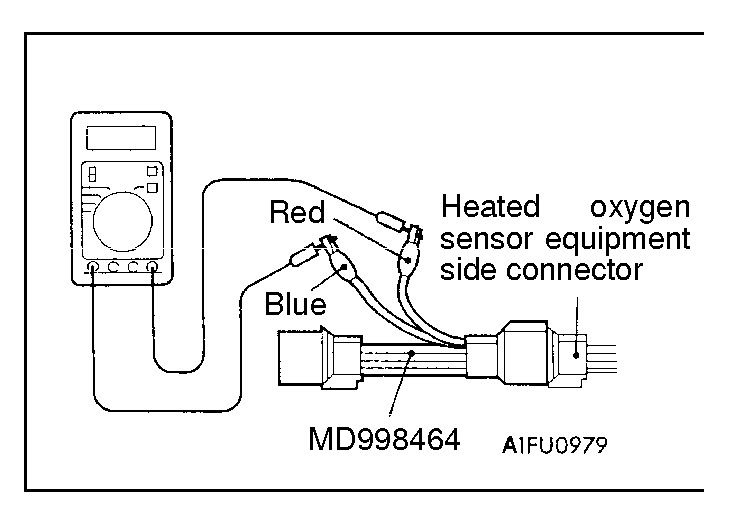
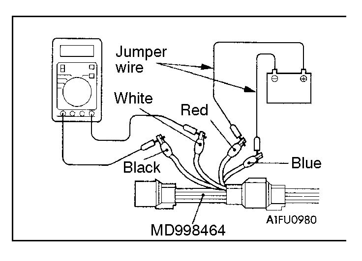
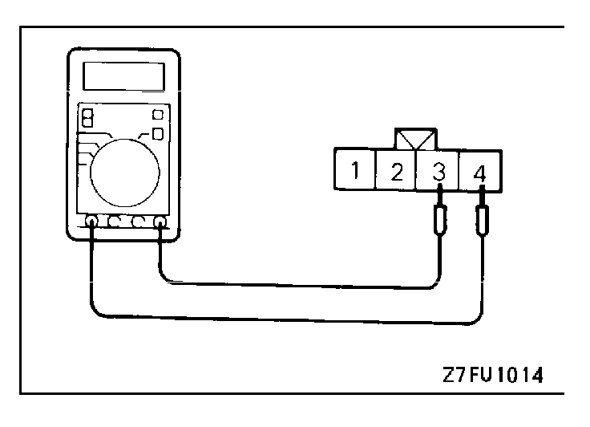

![[Previous]](https://mitsubishitechinfo.com/data/F24S/BUTTONS/fprevg.png)
![[Next]](https://mitsubishitechinfo.com/data/F24S/BUTTONS/fnextg.png)
|

|
HEATED OXYGEN SENSOR CHECK
<Heated oxygen sensor (front)>
1.Disconnect the heated oxygen sensor connector and connect the special tool (test harness) to the connector on the heated oxygen sensor side.
2.Make sure that there is continuity [Approx. 12 Ω at 20°C (68°F)] between terminal 1 (red clip of special tool) and terminal 3 (blue clip of special tool) on the heated oxygen sensor connector.
3.If there is no continuity, replace the heated oxygen sensor. |
|

|
4.Warm up the engine until engine coolant is 80°C (176°F) or higher.
5.Use the jumper wires to connect terminal 1 (red clip) of the heated oxygen sensor connector to the battery (+) terminal and terminal 3 (blue clip) to the battery (-) terminal.
Caution
Be very careful when connecting the jumper wires; incorrect connection can damage the heated oxygen sensor.
6.Connect a digital voltage meter between terminal 2 (black clip) and terminal 4 (white clip).
7.While repeatedly racing the engine, measure the heated oxygen sensor output voltage.
Standard value
| Engine |
Heated oxygen sensor
output voltage |
Remarks |
When
racing
engine |
0.6 - 1.0V |
If you make the air/
fuel ratio rich by rac-
ing the engine re-
peatedly, a normal
heated oxygen sen-
sor will output a volt-
age of 0.6 - 1.0V. |
|
8.If the sensor is defective, replace the heated oxygen sensor.
NOTE
For removal and installation of the heated oxygen sensor, refer to the following sections:
•GROUP 15 - Exhaust Manifold <2.0L Engine (Turbo)>
•GROUP 15 - Exhaust Pipe and Main Muffler<2.4L Engine>
|
|

|
<Heated oxygen sensor (rear)>
1.Disconnect the heated oxygen sensor connector.
2.Make sure that there is continuity [approx. 12 Ω at 20°C (68°F)] between terminal 3 and terminal 4 on the heated oxygen sensor connector.
3.If there is no continuity, replace the heated oxygen sensor.
NOTE
1.If the scan tool dose not display the standard value although no abnormality is found by the above mentioned continuity test and harness check, replace the heated oxygen sensor (rear).
2.For removal and installation of the oxygen sensor, refer to GROUP 15 - Exhaust Pipe, Main Muffler. |
|